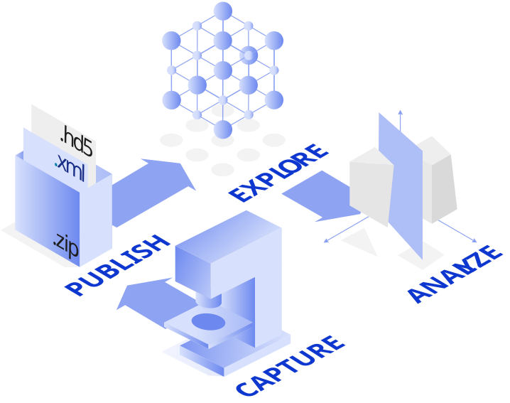

Find
Find existing data
Search the largest open repository of materials science data. No account needed. Filter by method, property, material class, or code. Download entries, raw files, or JSON.

Search the largest open repository of materials science data. No account needed. Filter by method, property, material class, or code. Download entries, raw files, or JSON.
Upload simulation output, manage privately or share with your group, embargo before going public, and link to your publications. Get a DOI in one click.
Connect lab instruments, automate measurements, and feed structured experimental data straight into NOMAD without manual entry.
When you upload, NOMAD parses your output into structured data. Every entry, regardless of code, follows the same schema. That makes your data comparable, searchable, and reusable by anyone.

Exploring NOMAD entries with search filters and interactive widgets.

From raw data files to published datasets.

Guiding through the steps for documenting research using NOMAD ELN functionality.
Sign up in under a minute. No account needed to browse, but required to upload or publish.
Getting started guide →Explore 19M+ existing entries, or drag and drop your own simulation output. NOMAD parses it automatically.
Supported formats →Make your dataset public when you are ready. Request a DOI in one click, then link it in your paper.
Publishing guide →Quote from a PhD student or postdoc. Should be specific about which code they use (for example VASP), what they searched for or uploaded, and whether NOMAD saved them time on a paper submission or grant.
Quote from a PI or postdoc, different angle from the first. Could focus on group data management, reproducibility, or using NOMAD to find reference calculations for a project. Specific is better than general.